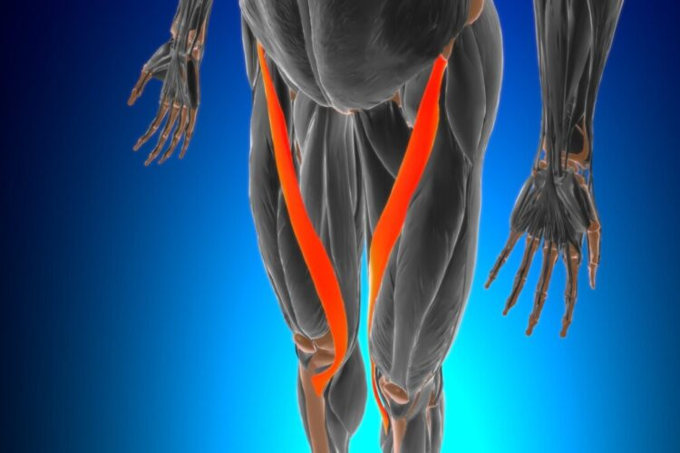

El músculo deltoides es un músculo grande y triangular que cubre la parte superior del brazo y la
articulación del hombro,
dándole su contorno redondeado característico. Su nombre proviene de la letra griega delta, por su
forma
triangular.
El deltoides está dividido en tres porciones, cada uno con un origen distinto pero que convergen
en un único punto de inserción en la tuberosidad deltoidea del húmero (cara lateral del tercio medio
del
húmero):
Es un músculo grande y grueso situado en la parte anterior del brazo, entre el hombro y el codo. Es
conocido por su papel
crucial en la flexión del codo y la supinación del antebrazo. El término "bíceps" proviene del latín
y
significa "dos cabezas," refiriéndose a las dos porciones del músculo.
El músculo tríceps braquial es un músculo grande ubicado en la región posterior del brazo y es el principal extensor del antebrazo en la articulación del codo. Está formado por tres cabezas o porciones musculares:

El sartorio es un músculo compuesto de tejido esquelético tipo estriado que se localiza desde la parte interna de la pelvis hasta la zona de la rodilla. Es decir, que tiene un recorrido que atraviesa cada miembro inferior. Por lo tanto, tiene funciones relacionadas con la flexión de la pierna.

El recto anterior o femoral es una porción del músculo cuádriceps que se localiza en el muslo y que
se
incluye dentro de la anatomía de la zona femoral,
y por eso es denominado de esa manera. En latín es llamado rectus femoris.
El cuádriceps es un un conjunto de 4 músculos que pertenece a la musculatura de las piernas y que
gracias a su lugar de inserción y origen actúan sobre la articulación de la cadera y también en la
rodilla.
Por lo que son importantes para la funcionalidad de los miembros inferiores.

Es la porción más grande del cuádriceps femoral. Se origina en la parte superior y anterolateral de
la
diáfisis del fémur, específicamente en el borde
anterior e inferior del trocánter mayor, la línea intertrocantérica, el labio lateral de la línea
áspera
y la tuberosidad glútea.
Sus fibras forman una masa fuerte que se inserta en el borde lateral de la rótula mediante el tendón
común del cuádriceps, contribuyendo a la
estabilización y extensión de la rodilla.

Se encuentra en la cara antero-medial del muslo, hacia la línea media. Se origina en la parte distal de la línea intertrocantérea y en el labio medial de la línea áspera del fémur. Se inserta también en la rótula a través del tendón común del cuádriceps. Participa en la extensión de la rodilla y es importante para la estabilidad medial de la articulación, contribuyendo a la bipedestación y movimientos como caminar, correr y saltar.
Su función principal es la flexión plantar del pie (como cuando te pones de puntillas) y la flexión de la rodilla, además de contribuir a la estabilización y movilidad durante la marcha, carrera y salto
El músculo tibial anterior es un músculo grueso y fusiforme (con forma de hueso, es decir, grueso en
el
centro y con extremos más delgados)
ubicado en la parte anterior y lateral de la tibia, en la pierna. Se origina en el cóndilo
lateral y en los dos tercios superiores de la cara lateral de la tibia, así como en la membrana
interósea
adyacente.
Estabiliza el tobillo durante la fase de contacto del pie con el suelo al caminar, evitando que la
punta
del
pie arrastre.
Sostiene el arco medial del pie, contribuyendo a la estabilidad del pie durante el movimiento.

El músculo sóleo es un músculo ancho y grueso situado en la parte posterior de la pierna,
específicamente en
la pantorrilla, debajo y por detrás de los músculos gemelos.
Se origina en la cara posterior de la tibia (línea del sóleo y borde medial), en la cabeza y borde
posterior
del peroné, y en el arco tendinoso que conecta ambos huesos.
Su contracción produce la flexión plantar del pie, es decir, el movimiento que permite ponerse de
puntillas
o empujar el pie hacia abajo.
El músculo bíceps femoral es uno de los músculos isquiotibiales, ubicado en la región posteroexterna
del
muslo, y está formado por dos cabezas o porciones musculares:
la cabeza larga y la cabeza corta.


El músculo semitendinoso es uno de los músculos isquiotibiales, ubicado en la parte posterior y
medial
del
muslo. Es un músculo biarticular que actúa sobre la cadera y la rodilla.
Se origina en la tuberosidad isquiática del hueso coxal, junto con la cabeza larga del bíceps
femoral.
Extiende el muslo en la articulación de la cadera.
Flexiona la pierna en la articulación de la rodilla.
Rota internamente tanto la cadera como la rodilla, especialmente cuando están flexionadas.
Contribuye a la estabilización de la pelvis durante la marcha.
Los gemelos, también conocidos como músculos gastrocnemios, son un par de músculos ubicados en la
parte
posterior de la pierna, formando la mayor parte de la pantorrilla. Están compuestos por dos cabezas
musculares:
El tendón de Aquiles, también conocido como tendón calcáneo, es una banda resistente de tejido
fibroso
que
conecta
los músculos de la pantorrilla (gastrocnemio y sóleo) con el hueso calcáneo (talón). Es el tendón
más
grande
y fuerte del cuerpo humano.
El tendón de Aquiles permite que el músculo de la pantorrilla mueva el pie y es esencial para
caminar, correr y saltar. Transmite la fuerza generada por los músculos de la pantorrilla hacia el
pie,
ayudando a mantenerlo estable.